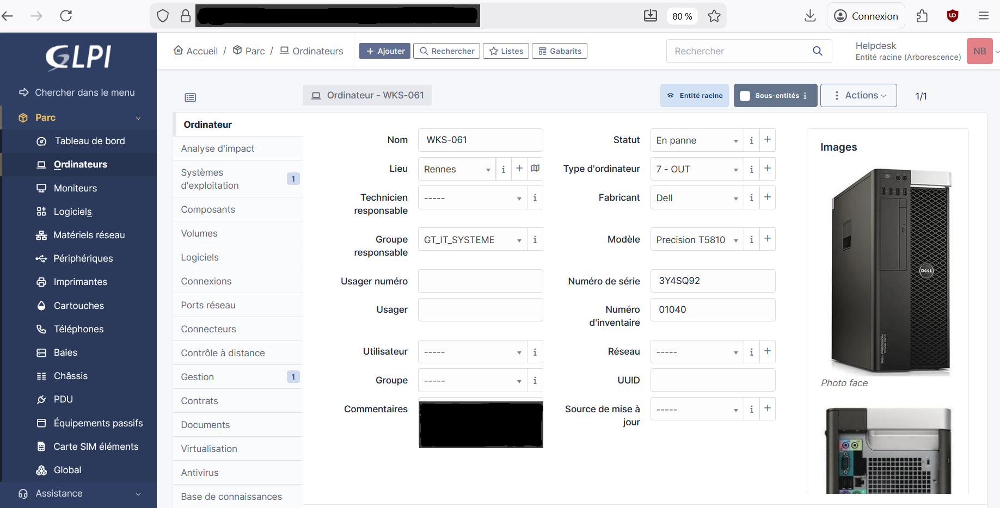

📌 Contexte
Réalisé dans le cadre du BTS SIO option SISR. L'objectif est de déployer une infrastructure de base pour une PME fictive.
🎯 Objectifs
- Installer un OS Serveur (Windows 2019 / Debian)
- Configurer DNS, DHCP, AD
- Intégrer des postes clients
- Rédiger la documentation
📸 Aperçu

📄 Documentation Technique
Ci-dessous, le guide d'utilisation de Clonezilla utilisé durant le projet.